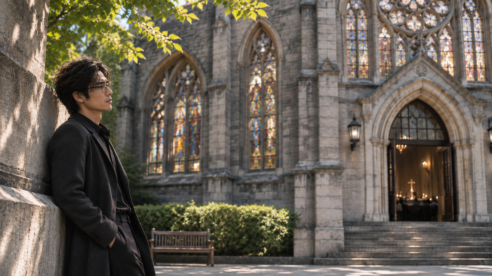
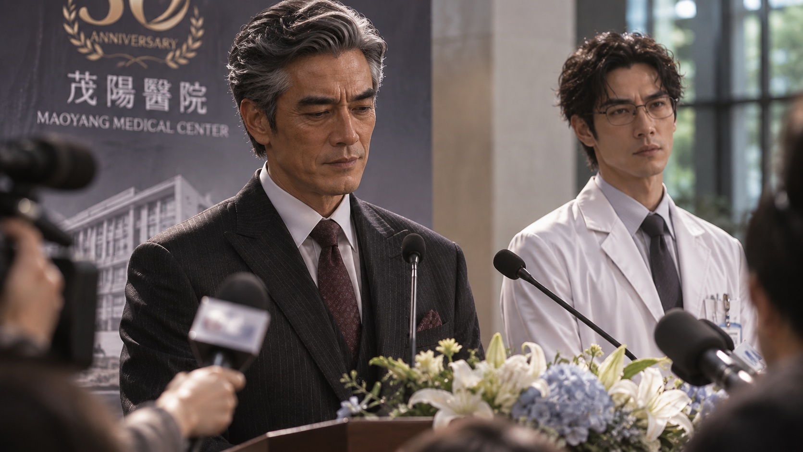
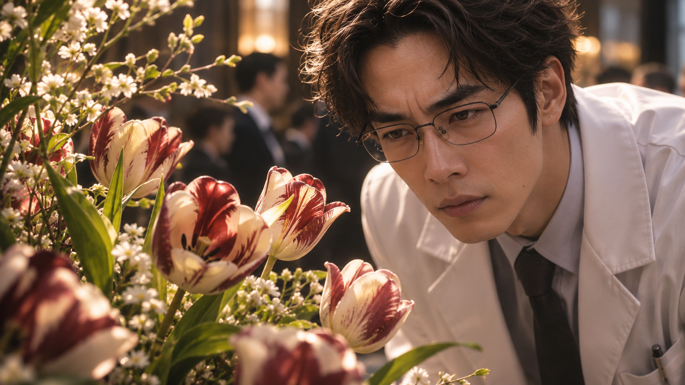
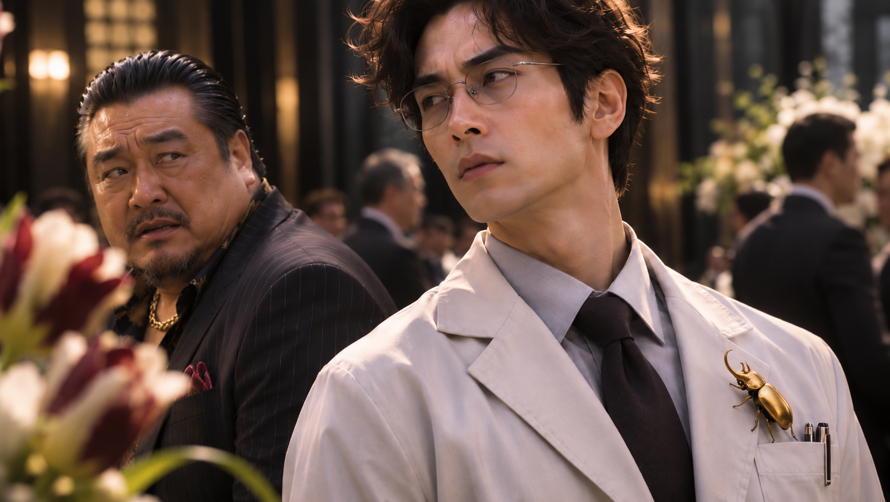
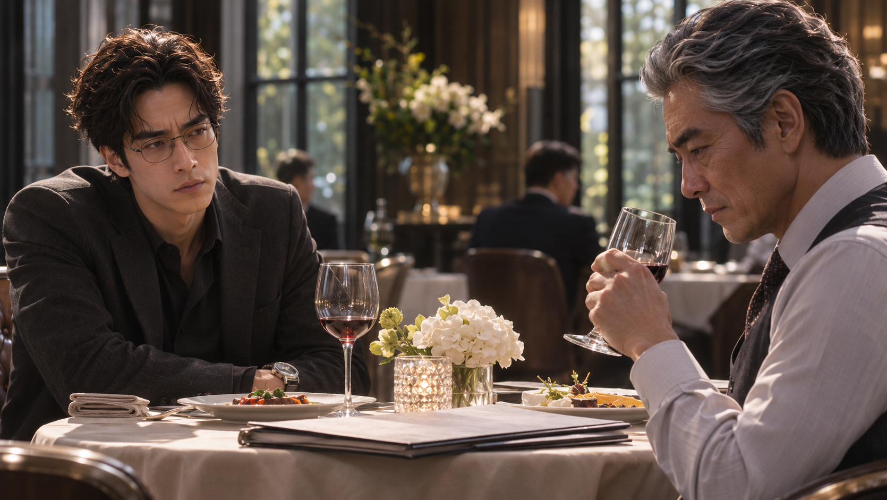
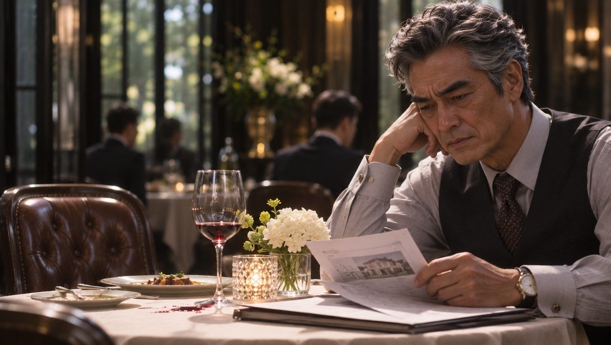

WHITE MAGIC ART STUDIO
第十章
三十週年慶
三十三歲的梁景毅，獨自站在一座教堂外。
他倚著石砌圍牆，指間夾著一根燃燒的香菸，目光越過教堂高聳的彩繪玻璃，靜靜望向裡頭。
燭光在玻璃後方搖曳，低沉而和諧的吟唱聲隱約傳來。牧師站在講壇前，帶領信徒低頭禱告。即使隔著一道牆，景毅仍能感受到那份莊嚴與平靜。

他將香菸送到唇邊，深吸一口。
吐出的煙霧在微涼的空氣中緩緩散開。
不知為何，他忽然想起小時候，母親曾經告訴他的那些故事。
關於聖術師。
關於拉比。
還有那位擁有許多名字，卻願意為世人犧牲一切的神。
那時候的他，曾經如此崇拜祂。
而現在……
或許，也沒有改變。
「喂！你怎麼在這裡抽菸？」
一道不悅的聲音打斷了他的思緒。
景毅轉過頭，看見一名教會會友正皺著眉頭望向自己。
「這裡可是教堂，你這樣抽菸，不覺得很不敬嗎？」
景毅沒有反駁。
他只是看了對方一眼，隨即將香菸按熄，彎腰拾起菸蒂，收進口袋。
「抱歉。」
就在這時，手機忽然震動。
景毅低頭看了眼來電顯示，接起電話。
「嗯，我知道了。」
簡短回應後，他掛斷電話，最後望了一眼教堂。
隨即轉身離去。
今天，是茂陽醫院成立三十週年的日子。
而對梁家而言，這一天，還有另一層意義。
茂陽醫院｜三十週年慶典
「三十年前，我隻身從香港來到台灣，決定在這片土地上創辦醫院。」
梁晉輝站在醫院大廳的臨時講台上，面對台下眾多嘉賓與媒體鏡頭，神情沉穩。

「一路走來，我們經歷過無數挑戰，也幸運地遇見許多願意伸出援手的人。正是這些支持，讓我更加堅信——醫療不只是一份工作，更是一份守護生命的責任。」
台下響起掌聲。
晉輝微微一笑，繼續說道：
「茂陽醫院的創立，正是這份信念的起點。如今三十年過去了，我相信，我們還能走得更遠。」
掌聲再度響起。
閃光燈接連亮起，媒體記者紛紛舉起相機，捕捉這位茂陽集團董事長的身影。
站在父親身旁的景毅，身穿潔白的醫師袍，臉上始終保持著得體的微笑。
「我不是醫生，但我始終明白健康的重要。」晉輝環視眾人，「因為唯有健康，人們才有機會追求自己的未來，讓美好的事物繼續傳承。」
他稍稍停頓。
「而今天，除了慶祝茂陽醫院三十週年，我還有一件重要的事情，要向各位正式宣布。」
台下逐漸安靜下來。
「關於茂陽醫院新任院長的人選。」
所有人的目光，都集中在講台上。
晉輝轉頭，看向站在身旁的景毅。
「新任院長，就是我的兒子——梁景毅！」
掌聲瞬間響徹大廳。
景毅微微欠身，向眾人致意。
「景毅不僅擁有美國史丹佛大學的醫學學歷，更是茂陽醫院最優秀的醫師之一。」
晉輝的聲音充滿自信。
「我知道，或許有人會質疑，他才三十出頭，是否有能力承擔這麼重要的職位。」
他看了兒子一眼。
「但我相信他。」
景毅微微一怔。
「不只是因為他是我的兒子，而是因為這些年來，他的努力與付出，我都看在眼裡。」
景毅望向父親。
那一瞬間，原本只是出於禮貌的微笑，終於有了幾分真心。
「我相信，梁院長將帶領茂陽醫院，走向下一個三十年！」
台下再次爆出熱烈掌聲。
然而，就在氣氛達到最高點時，一名記者突然舉起手。
「梁董事長！請問傳聞中，您其實還有一位長子，是真的嗎？」
晉輝的笑容微微一僵。
還沒來得及回答，另一名記者便緊接著追問：
「聽說您的長子多年前就離家出走，至今下落不明。請問這件事是否屬實？」
「那麼，梁景毅醫師這次接任院長，是否也是因為您的大兒子不在？」
「梁董事長，能否回應一下？」
現場頓時騷動起來。
原本聚焦在新任院長身上的鏡頭，紛紛轉向晉輝。
景毅站在一旁，臉上的笑容沒有消失。
只是，他看見父親沉默了。
那短短幾秒的沉默，比任何回答都更加刺耳。
「不好意思！」
秘書迅速上前，擋在媒體與晉輝之間。
「今天是茂陽醫院的三十週年慶典，所有與醫院無關的私人問題，我們一律不予回應。」
記者們仍不肯罷休。
這時，景毅主動接過麥克風。
「各位。」
他的聲音不大，卻讓現場逐漸安靜下來。
「今天是茂陽醫院值得慶祝的日子，我想，各位應該還有許多關於醫療發展的問題想了解。」
他露出一抹禮貌的微笑。
「至於我們家的私事，無可奉告。」
在工作人員的協助下，記者會總算順利落幕。
景毅將麥克風交還給秘書。
直到走下講台，他都沒有再看父親一眼。
茂陽醫院｜貴賓室
記者會結束後，晉輝與景毅陪同受邀的政商名流，在貴賓室內舉行茶會。
「哎呀，梁院長，別理那些記者啦！」
張議員端著茶杯，笑著拍了拍景毅的肩膀。
「現在的媒體啊，就喜歡抓著別人的家務事不放，沒新聞也能炒成大新聞！」
「謝謝張議員提醒。」景毅禮貌地回應，「往後醫院的事，還請您多多關照。」
「說什麼關照！應該是我們感謝你們才對！」
張議員笑得更加開懷。
「不過話說回來，梁院長，你應該還單身吧？」
景毅微微一愣。
「是，目前沒有對象。」
「哎呀，那怎麼行！你這麼年輕有為，總不能整天只顧著工作吧？」
「最近確實比較忙，暫時沒時間考慮這些。」
「男人身邊總要有個伴嘛！要不要我幫你介紹幾個——」
景毅正準備找個理由結束話題，目光卻忽然停在房間角落。
那裡擺著一座祝賀花籃。
各式花卉之間，幾朵色澤特殊的鬱金香正靜靜綻放。
景毅的眼神微微一變。
「不好意思，張議員，我先失陪一下。」
他走向花籃，俯身仔細端詳。
花瓣上的色澤與紋路，讓他想起一段早已塵封的記憶。

那是父親當年為了討母親慧萍歡心，特別運用聖術培育出來的花種。
他不可能認錯。
「沒想到梁院長也對花有興趣啊？」
張議員不知何時跟了過來。
景毅回過神。
「這花……是從梁家送來的嗎？」
「不是吧？我記得是桃園那邊送來的。」
「桃園？」
「對啊，你看，這裡不是有賀卡嗎？」
張議員指向花籃旁的卡片。
上頭寫著：
「桃園仁和醫院 敬賀」
景毅眉頭微蹙。
這種鬱金香，並不是普通花店能培育出來的品種。
唯有繼承木之力的聖術師，才有辦法讓它生長。
而父親近年來，幾乎已經不再碰這些花草。
那麼……
他下意識望向不遠處的晉輝。
父親正與幾位賓客談笑風生，似乎完全沒有注意到這座花籃。
景毅的視線，再次落回那些鬱金香上。
就在這時——
「哎呀！」
一名男子突然從旁邊撞了上來。
景毅退了半步，穩住身形。
「抱、抱歉！」
男子神色慌張，連忙低頭道歉。
「請問……請問這裡是燒燙傷科嗎？」
「先生，你在開什麼玩笑？」
張議員皺起眉頭。
「這裡是貴賓室！怎麼可能是門診區？」
「對不起，我第一次來這裡，實在不太清楚……」
「沒關係。」
景毅整理了一下醫師袍，轉頭叫住附近的實習醫師。
「Kevin。」
「是，梁院長。」
「麻煩你帶這位先生到二樓整形外科，請門診人員協助他。」
「好的。」
「真的很抱歉，謝謝您！」
男子連忙鞠躬，跟著實習醫師往門口走去。
離開前，他忽然回過頭。
那一眼，讓景毅隱約感到有些不對勁。
他這才注意到，男子穿著一身黑衣，袖口下方露出醒目的刺青。
然而，景毅並沒有多想。
他不知道的是——
就在兩人擦身而過的瞬間，一枚金色的橢圓體，已悄悄附著在他的衣物上。
細小的節肢緩緩展開。
一隻金色獨角仙，無聲無息地鑽進了他的口袋。

午後｜市區高級餐廳
「這幾年最辛苦的人就是你，怎麼今天還讓你請我吃飯？」
晉輝坐在餐桌前，笑著看向對面的兒子。
上午的週年慶典結束後，景毅特地安排了這頓午餐。
「一頓飯而已，沒什麼。」
景毅替父親倒了杯紅酒。
「再說，我能做的還有很多。」
晉輝聽了，欣慰地笑了笑。
「好好好，那我就恭敬不如從命了！」
他舉起酒杯，向景毅致意。
父子倆輕輕碰杯。
一開始，氣氛還算融洽。
晉輝喝了口酒，望著眼前的兒子，語氣漸漸認真起來。
「武兒。」
「嗯？」
「茂陽醫院，往後就交給你了。」
景毅點了點頭。
「我會盡力。」
「我知道。」晉輝微笑著說，「這些年來，真的辛苦你了。」
他停頓片刻。
「自從你母親離開後，家裡發生了太多事。雀兒還在韓國，龍兒又……」
「這本來就是我該做的。」
景毅忽然打斷了他。
晉輝抬起頭。
景毅的表情依舊平靜。
「既然你把醫院交給我，我自然會把它管理好。」
他從隨身的公事包裡拿出一份文件，放到父親面前。
「對了，有件事情，我想趁今天跟你討論。」
「這是什麼？」
晉輝翻開文件。
「我在市區買了一棟房子。」
「房子？」
「嗯。梁家大宅現在只剩我們兩個人住，景瑜什麼時候回國也不確定。」
景毅靠向椅背，繼續說道：
「新房子離醫院比較近，空間也夠大。以後你不用每天花那麼多時間往返，我處理院務也方便。」
「所以……你想搬家？」
「是。」

晉輝沉默片刻，翻過幾頁文件。
「可是……」
他抬起頭。
「龍兒呢？」
景毅的手指微微一頓。
「什麼？」
「我是說，如果有一天龍兒回來了，我們都搬走，他要去哪裡找我們？」
景毅沒有立刻回答。
他只是靜靜看著父親。
幾秒後，才低聲開口。
「你就這麼在乎他？」
晉輝一愣。
「武兒？」
「我只是問你。」景毅放下酒杯，「你真的這麼在乎他？」
「他畢竟是這個家的一份子，不是嗎？」
景毅輕輕笑了一聲。
「是嗎？」
他抬起眼。
「那為什麼今天早上，你不敢回答那些記者？」
晉輝皺起眉頭。
你在說什麼？
「他們問你，我是不是因為梁景皓不在，才有機會接下院長的位置。」
景毅的聲音依舊平穩。
「你為什麼不回答？」
「那種場合，本來就不適合討論家裡的事。」
「可是你只需要回答一句話。」
景毅看著父親。
「不是。」
晉輝沉默了。
「只要說不是，就好了。」
「武兒，我有我的苦衷，你知道的。」
「哦……」
景毅緩緩點頭。
「所以，他們猜對了？」
「我不是那個意思。」
「那你是什麼意思？」
晉輝嘆了口氣。
「你今天才剛接任院長，何必讓這些事情影響心情？」
景毅望著他。
原本還勉強維持的笑容，終於消失了。
「爸。」
他低下頭，沉默片刻。
「你知道嗎？」
「什麼？」
「今天本來應該是媽過世以後，我最開心的一天。」
晉輝微微一怔。
「我努力了這麼多年，終於讓你放心把醫院交給我。」
景毅抬起頭。
「我真的很高興。」
他頓了頓。
「尤其是你在台上說，你相信我的時候。」
晉輝張了張嘴，卻沒有出聲。
「可是為什麼……」
景毅的聲音漸漸低了下來。
「為什麼我都已經做到這個地步了，你還是放不下他？」
「武兒……」
「快九年了。」
景毅望著父親。
「那個人離開家，快九年了。」
他指了指桌上的房屋文件。
「我替你管理醫院，替你照顧這個家，連以後住在哪裡，都替你想好了。」
「可是你第一個想到的，還是他。」
晉輝的神情漸漸凝重。
「因為他很重要！」
他的聲音突然提高。
附近幾桌客人紛紛投來目光。
景毅卻只是安靜地望著他。
過了幾秒，他笑了。
「是啊。」
「當然重要。」
他的嘴角微微揚起，眼底卻沒有半分笑意。
「畢竟，他可是偉大的『木翼』。」
晉輝的表情瞬間變了。
「武兒，這跟木翼沒有關係。」
「沒有關係？」
景毅輕輕搖頭。
「從小到大，我不管多努力，不管考幾次第一名，聖術練得多好，都比不上他。」
「那不是——」
「因為他是木翼。」
景毅打斷了父親。
「只要他在，你的眼睛就永遠看著他。」
晉輝沉默了。
「後來他走了。」
景毅的聲音逐漸顫抖，卻仍努力維持平靜。
「我以為，只要我夠努力，替這個家多做一點，你就會安心。」
「我甚至以為……」
他停了下來。
「今天你終於能開心一點了。」
晉輝緩緩垂下眼。
景毅望著父親，忽然笑得有些疲憊。
「可是昨晚……」
他搖了搖頭。
「不對。」
「不是昨晚。」
「是每一晚。」
晉輝抬起頭。
「每次經過你的房間，我都聞得到酒味。」
景毅的聲音變得低沉。
「這麼多年，從來沒有淡過。」
晉輝握著酒杯的手，微微收緊。
「武兒，很多事情……沒有你想得那麼單純。」
「我知道。」
景毅點了點頭。
「你是梁晉輝。」
「茂陽集團董事長。」
「亞洲聖術會的首席至尊聖術師。」
他一字一句地說著。
「你有太多身分，太多責任。」
景毅直視著父親。
「所以，你根本沒有時間，好好當我的爸爸。」
這句話落下後，兩人之間忽然安靜了。
餐廳裡依舊有人談笑，杯盤碰撞的聲音不時傳來。
但父子倆誰也沒有開口。
直到景毅再次說話。
「對了。」
他望著父親，語氣出奇地平靜。
「如果你真的那麼想他，為什麼不去找？」
晉輝皺眉。
「什麼？」
「你的記憶木瞳術。」
景毅的眼神微微一沉。
「你不是有辦法透過記憶尋找線索嗎？」
晉輝的手指僵住。
「為什麼這麼多年，你從來沒有真正去找過他？」
「……」
「還是說——」
景毅身體微微前傾。
「你其實知道，就算找到了，也沒有臉面對他？」
「梁景毅！」
晉輝猛然拍向桌面。
酒杯劇烈晃動，幾滴紅酒灑在潔白的桌布上。
「你說夠了沒有！」
景毅看著父親。
然後，他緩緩笑了。
「原來如此。」
晉輝胸口起伏，仍在壓抑怒氣。
「現在……」
景毅垂下眼。
「連小名都不叫了呢。」
他拿起酒杯，將剩下的紅酒一飲而盡。
接著起身。
「我吃飽了。」
晉輝沒有說話。
「抱歉，毀了這頓飯。」
景毅拿起外套與公事包。
「不過，我還有醫院的事情要處理。」
他停了一下。
「畢竟，今天可是我當院長的第一天。」
說完，他頭也不回地離開。

晉輝獨自坐在原位。
桌上的餐點，幾乎沒有動過。
他低頭望著那份房屋文件，久久沒有翻頁。
景毅說的那些話，並非全然沒有道理。
而真正讓他無法反駁的，是其中某些連自己都不願面對的事實。
景毅走出餐廳。
午後陽光落在他的肩上。
他伸手整理外套，準備前往停車場。
口袋深處，一隻金色獨角仙輕輕動了動。
他毫無察覺。
茂陽醫院｜院長辦公室
砰！
砰！砰！
沉悶的撞擊聲，不斷從辦公室後方的私人運動空間傳來。
景毅戴著拳擊手套，一拳接著一拳，擊打眼前的沙包。
汗水沿著額角滑落。
他的呼吸越來越急促。
腦海裡，父親的聲音卻始終揮之不去。
「因為他很重要！」
砰！
又是一拳。
「龍兒呢？」
砰！
「他畢竟是這個家的一份子，不是嗎？」
景毅咬緊牙關，猛然揮出最後一拳。
沙包劇烈晃動。
他停下動作，雙手撐著膝蓋，大口喘息。
就在這時——
「……殺戮……」
一道極輕的聲音，忽然在腦海深處響起。
景毅猛地抬頭。
「誰？」
房間裡沒有其他人。
只有沙包仍在緩緩擺盪。
角落的陰影中，一隻金色獨角仙靜靜伏著。
牠的雙眼，泛起一絲詭異的暗紅光芒。
景毅皺起眉頭。
他環視四周，卻什麼也沒發現。
沉默片刻後，他摘下拳擊手套，走回辦公室。
坐上辦公椅時，目光剛好落在桌上的一份資料。
那是上午週年慶典的祝賀名單。
他忽然想起那座花籃。
還有那些不應該出現在醫院裡的鬱金香。
景毅拿起手機，撥通一組電話。
「喂，您好，請問是王院長嗎？」
「哎呀！梁院長！」
電話另一頭傳來熱情的聲音。
「恭喜恭喜啊！今天的典禮還順利吧？」
「很順利，謝謝您。」
景毅語氣恢復了平日的沉穩。
「也謝謝您特地從桃園送花過來，真是太客氣了。」
「哪裡哪裡！三十週年可是大事，當然要祝賀一下！」
兩人寒暄了幾句。
景毅才像是忽然想起什麼似的，隨口問道：
「對了，王院長。」
「嗯？」
「您今天送來的花籃，是請哪一家花店準備的？」
「花店啊？我想想……」
電話另一頭傳來翻找東西的聲音。
「我請秘書處理的。這樣好了，我直接把店名傳給你。」
「好，麻煩您了。」
「不會不會！改天有空再一起吃飯啊！」
「一定。」
景毅掛斷電話。
幾秒後——
叮咚。
手機螢幕亮起。
一則訊息出現在畫面上。
「比克花店」
景毅盯著那四個字。
良久，嘴角才緩緩浮現一抹笑意。
「原來如此……」
他將手機放下，靠向椅背。
腦海裡，忽然浮現出一張許久未見的臉。
「這幾年不回家……」
景毅低聲喃喃。
「原來跑去花店打工了啊。」
他站起身，拿起桌上的車鑰匙與外套。
幾分鐘後，一輛轎車駛離茂陽醫院。
沿著城市道路，朝著導航上的地址前進。
目的地——
比克花店。